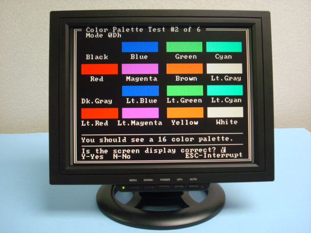
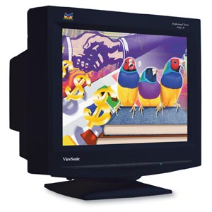
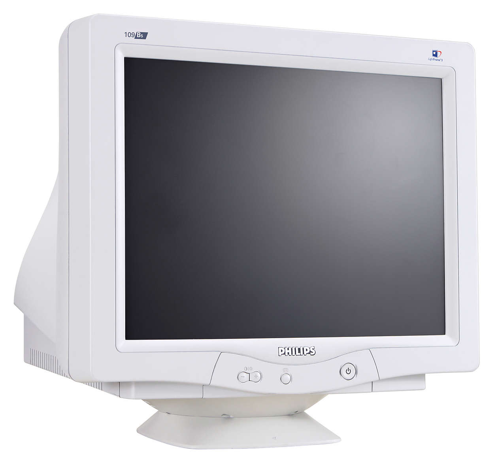
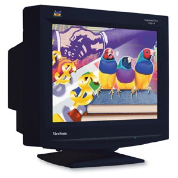
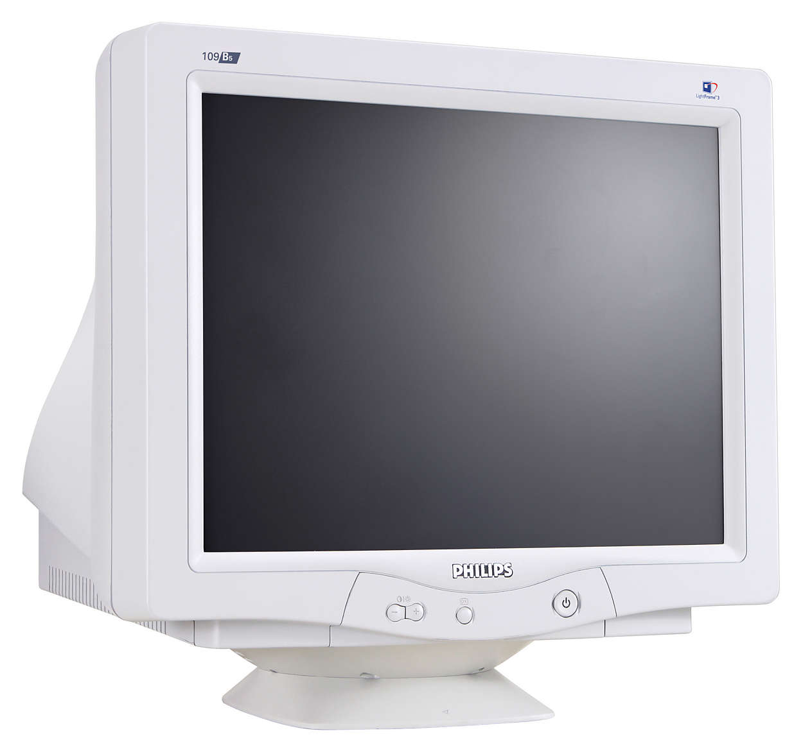

Monitores

Universidade de Aveiro
O tema das diversas páginas deste site é "Monitores", um tema de muito interesse para os membros deste grupo; como estudantes e utilizadores destes dispositivos diariamente; uma vez que os monitores são hoje em dia indispensáveis para facilitar o trabalho de muitos trabalhadores. Este site está dividido em 6 páginas. Onde pode encontrar informação em relação á evolução dos monitores; onde damos a conhecer alguns dos tipos de monitores que existem; em relação à resolução e a sua importância na qualidade de imagem num monitor e também em relação ao funcionamento e criação das cores exibidas num monitor.
Evolução dos Monitores...

 


